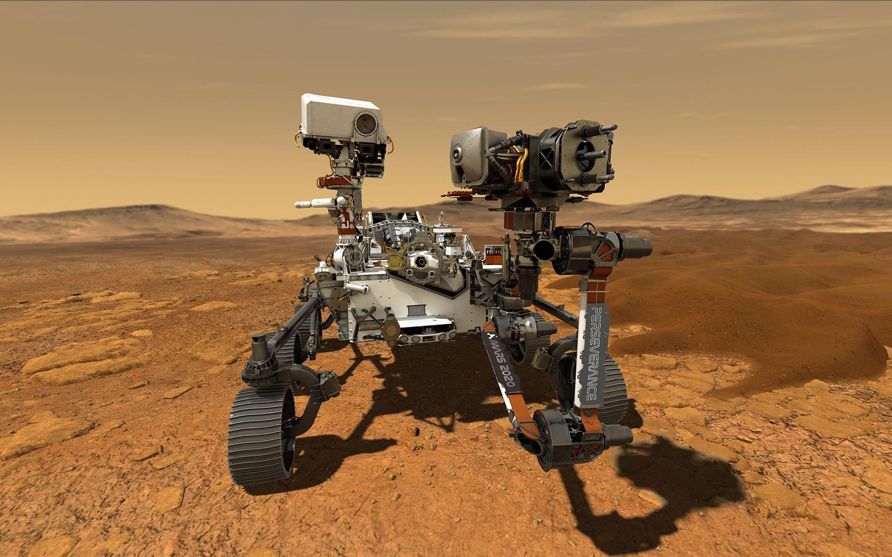

Plus d'une semaine après l'atterrissage de Perseverance sur Mars, la mise en route et le check-up des sept instruments du rover se poursuivent. En attendant les premiers tirs du laser de SuperCam, qui serviront à déterminer la composition chimique et organique des roches martiennes, dont celles qui seront rapportées sur Terre, Tech-Space s'est entretenu avec Franck Leibreich. Directeur des solutions laser chez Thales, Franck Leibreich nous explique ce laser français qui va chercher des traces de vie.
L'exploration de Mars par Perseverance
L'exploration de Mars par Perseverance est le déroulement de la mission de l'astromobile de la mission spatiale Mars 2020 dans le cratère d'impact Jezero. Cet engin, développé par la NASA s'est posé à la surface de la planète Mars le 18 février 2021. Perseverance est un robot mobile conçu pour explorer ce cratère qui a abrité, il y a environ 3,6 milliards d'années, un lac permanent et qui conserve les traces de plusieurs deltas de rivière. Perseverance s'est posé à proximité immédiate d'un de ces deltas. Durant son exploration, il est prévu qu'il traverse une partie de celui-ci avant de se diriger vers ce qui pourrait être les rives de l'ancien lac qui remplissait le cratère. Enfin, il doit escalader les rebords du cratère hauts de 600 mètres avant de parcourir les plaines environnantes. Durant sa mission primaire (un peu plus de deux années terrestres), l'astromobile pourrait réaliser à peu près la moitié du trajet planifié.
L'objectif principal de la mission de Perseverance est de rechercher des sites ayant pu abriter des formes de vie, à l'aide des instruments embarqués, et de prélever une quarantaine de carottes de sol et de roches sur des sites sélectionnés. Le résultat de ces prélèvements doit être déposé par l'astromobile sur des emplacements soigneusement repérés en attendant d'être ramenés sur Terre par une future mission étudiée conjointement par la NASA et l'Agence spatiale européenne. Selon le planning élaboré par les deux agences, le retour sur Terre est prévu pour 2031 sous réserve de son financement. Le but final est de pouvoir effectuer sur Terre une analyse fine des échantillons du sol martien, notamment d'identifier d'éventuelles formes de vie anciennes, en utilisant toutes les capacités des instruments terrestres qui, contrairement à ceux embarqués sur les engins spatiaux, ne sont pas limitées par les contraintes de masse.
L'astromobile Perseverance reprend l'architecture de Curiosity qui explore depuis 2012 la surface de Mars. Perseverance est un engin de plus d'une tonne qui dispose d'une palette d'instruments scientifiques (caméras, spectromètres de différents types) qui sont utilisés pour identifier les sites les plus intéressants, fournir le contexte du prélèvement effectué (caractéristiques géologiques, conditions climatiques à la formation) et effectuer une première analyse chimique : ce sont le spectromètre de fluorescence des rayons X PIXL, le spectromètre Raman SHERLOC, le spectromètre imageur SuperCam et la caméra Mastcam-Z. L'astromobile emporte également une station météorologique (MEDA), un radar destiné à sonder les couches superficielles du sol (RIMFAX). Deux expériences doivent tester sur le terrain des technologies avant leur mise en œuvre de manière opérationnelle dans de prochaines missions : MOXIE produit de l'oxygène à partir de l'atmosphère martienne (ISRU) et MHS (Ingenuity), un petit hélicoptère de moins de deux kilogrammes, va tester les capacités d'un engin aérien dans l'atmosphère très ténue de Mars.
Image prit par le rover sur Mars